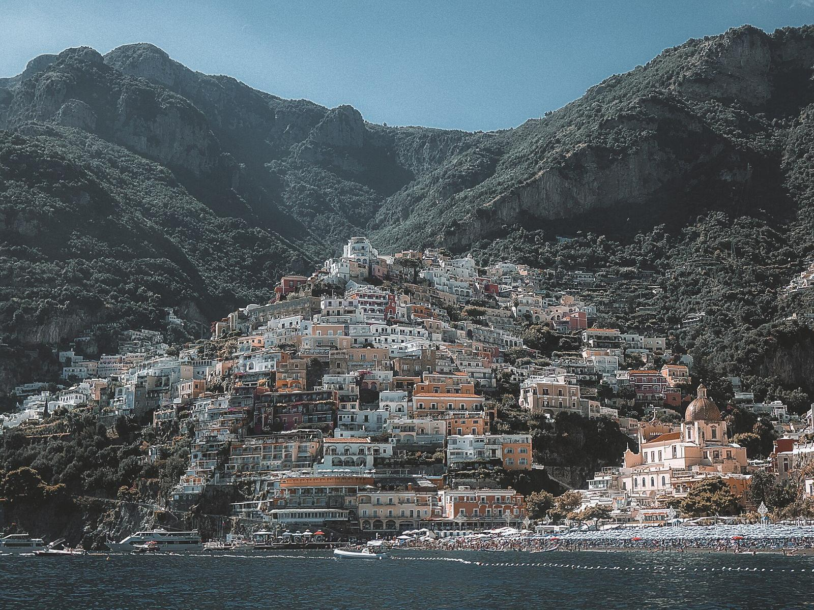
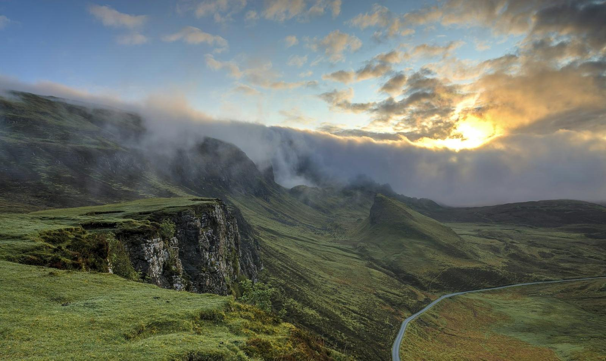
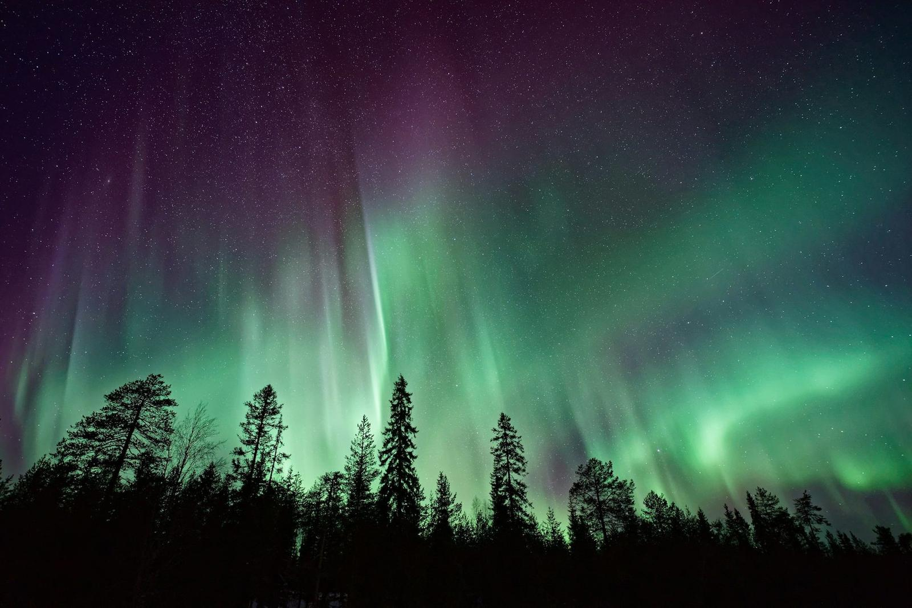
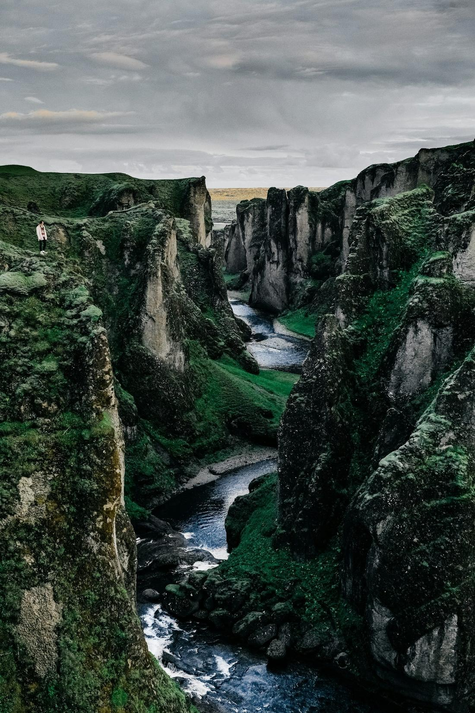
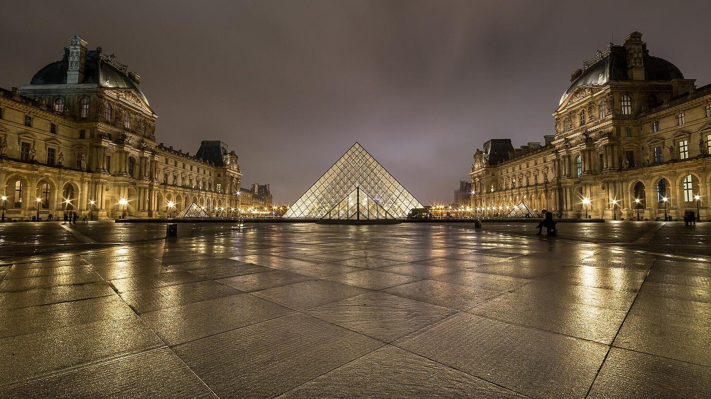
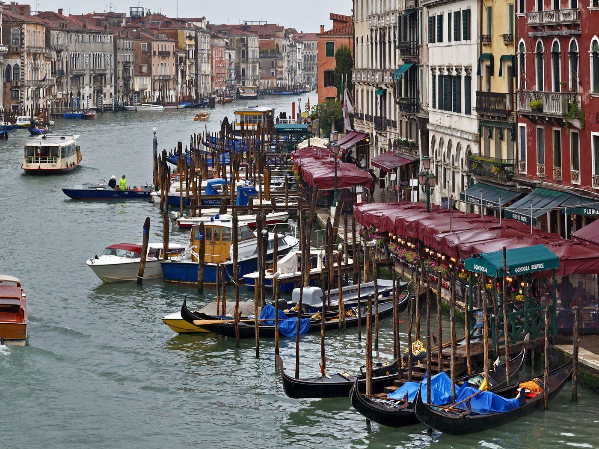
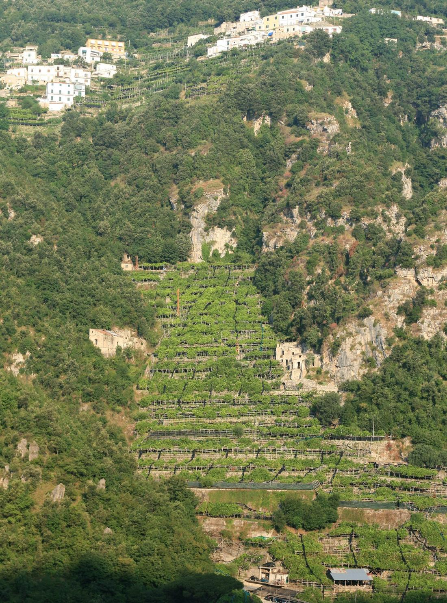

01 — Coastline Walks
海岸线徒步
沿着海与悬崖的交界走上一整天。浪声是唯一的背景音，路是咸的，风把云推向很远的地方。走累了就在礁石上坐下，看渔船拖出一道白线。海岸线教会我的事：路不总是连续的，但方向感可以。
← Back to AboutABOUT · INTERESTS — 旅行偏好集
从 About 页点进来的每一种「喜欢」，都配着一段真实的光线与一张照片。示例内容，欢迎替换成你自己的故事。

01 — Coastline Walks
沿着海与悬崖的交界走上一整天。浪声是唯一的背景音，路是咸的，风把云推向很远的地方。走累了就在礁石上坐下，看渔船拖出一道白线。海岸线教会我的事：路不总是连续的，但方向感可以。
← Back to About
02 — Old Town Mornings
清晨六点的老城属于本地人：卷帘门半开的面包房、洒水的石板路、遛狗的老人。游客还没醒来，光线已经把街道擦亮。这是我最喜欢的拍摄时段——城市还没戴上面具。
← Back to About
03 — Scenic Trains
把风景做成一条轨道。玻璃窗外山谷一层层打开，隧道与亮处交替出现，像有人在翻一本很厚的画册。在瑞士，我为了坐一段八分钟的铁路特地绕了两个小时的路——值得。
← Back to About
04 — Aurora & Starry Skies
夜里十一点，向导关掉车灯，指着天边一片发绿的雾。三分钟后它开始流动，整片天空变成一条缓慢的河。极光之下你会明白，有些风景不给重来的机会。
← Back to About
05 — Mountain Paths
海拔每升高一百米，植物矮一截，声音少一层。走到苔藓峡谷深处的时候，连自己的脚步声都被水声收走了。山间小径最好的部分是：它要求你一步一步来。
← Back to About
06 — Street Photography
最好的照片在按下快门之前就发生了。街角、雨伞、反光的斑马线——街头摄影练习的是等待和放手。我在东京学到一件事：先让路，再按快门。
← Back to About
07 — Rainy Day Museums
下雨天的博物馆是最好的避难所。人少、灯暖、时间变慢。我在卢浮宫躲过一场阵雨，顺便看了三个展厅——计划外的相遇总是最深的。
← Back to About
08 — Night Ferries
末班渡轮的甲板上只有几个人。城市在身后慢慢退远，灯光被水揉碎。深夜渡轮像一场缓慢的告别——你不知道对岸是什么，但你知道船会到。
← Back to About
09 — Cliff Sunsets
太阳落进海里的那三分钟，全世界都安静了。悬崖上的白房子一层层变成金色，然后是粉色，然后是深蓝。有人鼓掌，有人欢呼，我什么都没做——只是看完了。
← Back to About
10 — Market Breakfasts
认识一座城市最便宜的方式：去它的集市吃早餐。摊主的手势、当季的水果、刚出炉的面团。我在阿马尔菲买过一颗大得离谱的柠檬，酸得眼睛眯起来——现在想起来还是会笑。
← Back to About